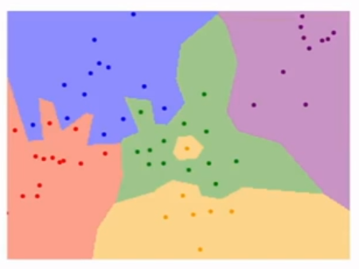
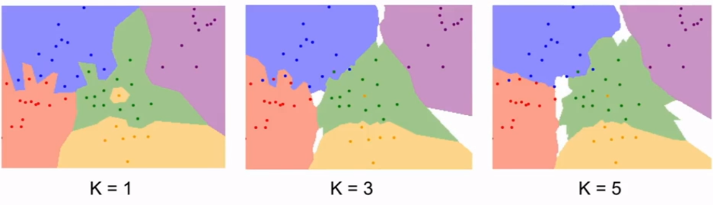
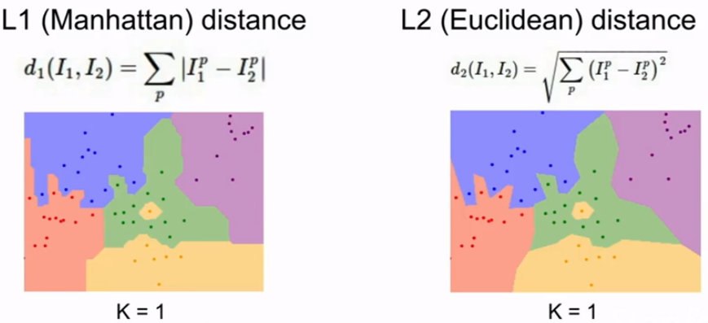
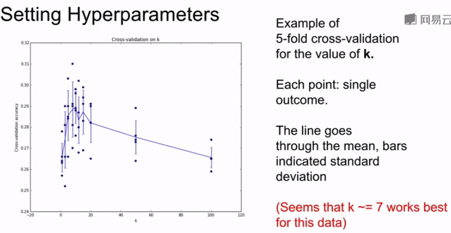
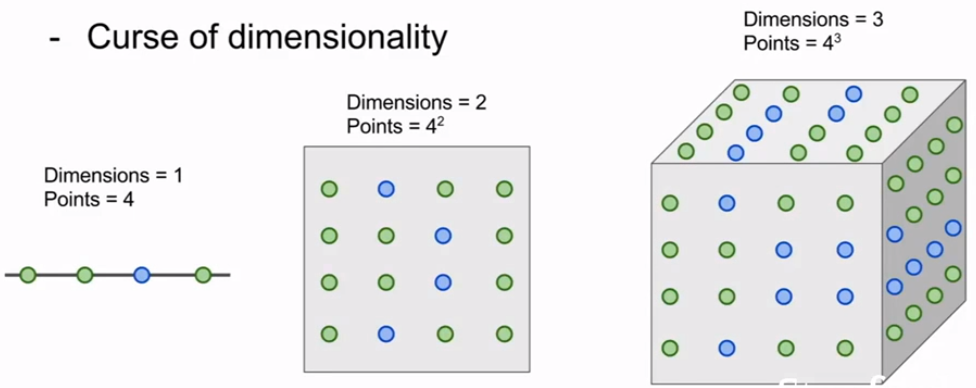
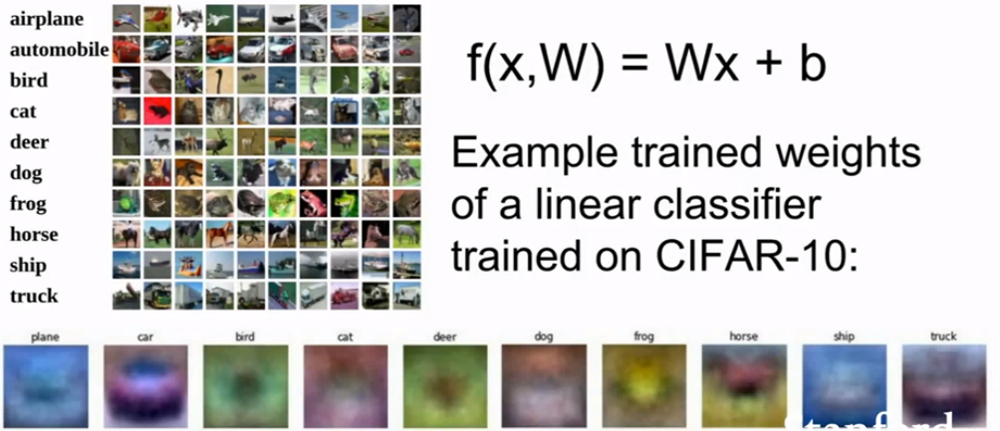

图像分类-Data Driven Method
- 实际上，计算机看一张图像，就是看的一个巨大的数字矩阵；在计算机中，现实图像中的每一个像素点由3个数值来表示，分别代表RGB三个通道的值
实际问题中，我们往往只会给图像一个标签（如Cat），但是计算机看到的却是一个巨大的数字矩阵，这被称为语义鸿沟（Semantic Gap），我们就是希望能够fill this gap
而很多现实中轻微的改变，会导致计算机看到完全不同的矩阵，如：Viewpoint Variation，illumination，Deformation，Occlusion，Background Cluster（目标和图像颜色接近，导致看上去和背景融合了）；Intraclass variation（类内实例之间也会有差别，如毛色，年龄等）
在图像分类刚刚兴起的时候，采用往往是手动设计分类规则，一般都是先提取图像的edge，然后制定一系列的分类规则，如角点的种类，角点的个数等等，但是这类方法的分类效果很差，也很不鲁棒。
后续，更多的方法是基于Data Driven 的方法，它不需要设计很多特定的分类规则，而是丢给你海量的数据，去训练一个算法来进行图像分类，之后将该算法进行测试即可。一般来说，此类Data Driven的方法，一定会有两个API，即
Train()和Predict()。在 Data Driven 的方法中，最简单的应该是最近邻（Nearest Neighbor，NN）了，在NN算法中，给定两张图像，计算所有对应像素点的$\ell_1$距离（又称曼哈顿距离）的总和，取最小距离的那一类作为预测分类
Q：若有N个样本，对于NN算法来说，Train和Predict的时间复杂度分别是多少？
A：Train:O(1) ; Predict: (N)
在NN中，训练阶段只需要让分类器“记住”所有的训练样本和对应的标签，而预测阶段，则需要将输入图像和所有的样本进行曼哈顿距离的计算和比较来确定最小距离那一类。
但是这不是很理想，因为NN不是：fast at prediction, slow for training（CNN是^ ^），而正好相反。
并且NN非常脆弱，一点也不鲁棒，下图是它的分类情况，可见它的决策面不光滑，并且有的还会“深入”到另一类中，或者单纯的在另一类中“开辟”自己的领地，而这些点很有可能是噪声，实际中我们应该考虑忽略这些点。

为了解决NN的脆弱的问题，提出了KNN算法（K-Nearest Neighbor），相比于NN，KNN并不是找距离最近的样本，而是找距离最近的K个样本点，并由这些样本点投票得到测试样本的分类结果。
同样，KNN中也可以用距离作为每个样本点的投票权重，最终进行加权投票，这些都算是小改进了。
下图展示了KNN取不同K的的分类决策面，其中白色区域表示该区域并没有获得K个最近邻的投票，而NN可以认为是K=1的KNN的特例

K近邻 (K-Nearest Neighbor, KNN)
KNN中有两个超参数(hyperparameters)，K和距离度量 Metric distance。（超参数一般指的是无法通过训练得到最优值的参数，它们往往需要我们在训练之前predefined。）
K的影响
一般来说，K越大，算法对于噪声的鲁棒性越好，但是并不意味着K越大，算法的效果越好。
Metric Distance的影响
KNN中常用的两种Metrics是$\ell_1, \ell_2$距离：
- $\ell_1$ (Manhattan) distance
$$
d_1(I_1, I_2)=\sum_p|I_1^p-I_2^p|
$$
思考一下L1距离的图像，是一个菱形
$\ell_2$ (Euclidean) distance
$$
d_2(I_1, I_2)=\sqrt{\sum_p|I_1^p-I_2^p|^2}
$$
思考一下L2距离的图像，是一个圆形两者的区别和选择
- 实际上，Metric 的是对预测空间里底层的几何或者拓扑结构做出的不同假设，因此如何选择，也是有学问的；
- L1距离显然是依赖于预测空间中坐标系的选取的，因为若旋转（改变）坐标系，两点之间的L1距离会改变，而对L2距离则不会有影响；
- 一般来说，若特征向量中各个位置上的元素是有确定的意义的（如年龄、身高或其他分析出来的意义），一般会选择L1距离；而若特征向量是一个通用的向量，不清楚各个位置上元素的意义，则L2距离可能更合适一点。
- 通过使用不同的metric，可以将KNN推广到更多的数据类型上，其实本质上是根据数据类型来选择KNN中合适的Metric
例子比较

上图展示了采用不同的metric，KNN输出的决策边界的样子：
- L1的决策边界趋向于跟随坐标轴，因为L1 metric本身就是取决于我们的对于坐标轴的选取；
- L2的决策边界只是放在了最自然的地方
如何选择超参数
注意我们训练模型的本质是希望在没见过的数据上的表现最好！！
从Train Set选择表现最好的超参（垃圾，一般泛化性比较差）
将Dataset分成Train和Test，从Test Set上选择表现最好的超参（垃圾，在一定程度上是作假行为，因为你只能保证在Test上最好，不一定保证在其他没见过的数据上也相对好）
将Dataset分成Train，Val，Test，从Val上选择表现最好的超参，在Test上做测试，论文中写Test的结果。（最棒！诚实的行为，因为要保证test是模型没见过的数据，超参不能在没加过的数据上调~）
交叉验证，往往用在小的数据集上，DL中一般不用，因为DL的数据集大，而且训练比较浪费时间。
交叉验证指的是将数据平均分成几折（fold）和一个Test，（分成几折就是几折交叉验证），依次选择每一个折的数据当val，剩下折的数据当train，所有折遍历完了之后，选择平均在val上表现最好的超参。
一般来说，N折交叉验证后会画一个这种图像，来展示结果并选择超参。（下图展示的是5折交叉验证）

小注意
实际上，KNN一般不用在图像分类上，原因如下：
速度问题：fast for train，slow for test并不是我们想要的
L1，L2距离都不适合度量两张图像的相似度
维度灾难：由于KNN对于数据没有任何的先验假设，因此为了更好的分类或者正常工作，就需要在样本空间上有非常密集的样本点。
下图中，展示了KNN中的维度灾难，比如当维度是１的时候，可能我们需要的“密集”的样本点是$4$个，才能够让KNN正常工作；那么当维度为２的时候，此时需要的样本点可能就是$4^2$个；3维的时候需要$4^3$个… 这种样本点的个数是随着样本空间的维度增长而指数增长的，指数增长是一个非常坏的消息。

线性分类（Linear Classification）
线性分类器是参数化的最简单的分类器，但是它的原理是可以推广到CNN中的
在参数化的模型中（KNN并不是参数化的模型），模型在训练好后会将Train Data的知识固化到可学习的参数中，在测试的时候只需要这些参数，而不需要训练数据
线性分类器的形式是：
$$
f(x)=Wx+b
$$
如对于一个Cifar-10中的分类问题，其数据的size是32*32*3 ，因此输入样本x（拉伸成向量）的尺寸：$size(x)=3027\times 1$，参数W的尺寸：$size(W)=10\times 3072$上面的b是bias，在线性分类器中一般不与训练数据发生交互，仅仅表示一些数据独立的偏好，比如狗比猫多的时候，b中对于狗的偏差元素可能更大
分类器的输出$f(x)$尺寸是$10\times 1$，表示对应类分类的得分。
实际上，线性分类器从W来看可以看成模板匹配法，W中每行表示对应类的模板，该行与输入元素进行点积计算输入与该类模板的相似度，而由于W中每类只学习到了一个模板，所以这个模板一般是平均模板，对于类内极端的样本或者不常见的样本，往往会分类错误。下图展示了W每类的平均模板

在空间中，实际上线性分类器是在寻找各个类之间的线性决策面（边界）
- 因此，对于线性分类器来说困难样本为
- 非线性的分类问题（类类之间的决策边界是非线性的）
- 多label问题